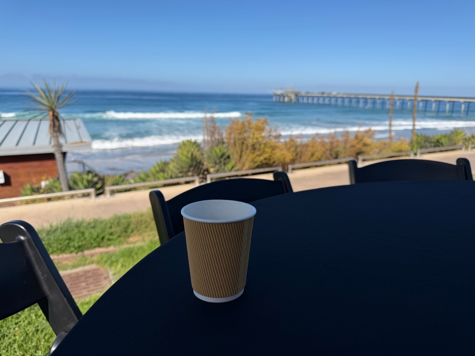

October 27–28, 2026 — Seaside Forum and Ted Scripps Room, La Jolla, San Diego
← Back homePublished: October 29, 2026
Some conferences you attend for the talks. Some you attend for the people. And once in a while, you walk into a venue so beautiful that the setting itself becomes part of the argument: this work — protecting patients from the machines meant to heal them — deserves a place this good.
CPSS 2026, the Cyber Patient Safety Symposium, ran for two days on the doorstep of the Pacific. The Seaside Forum and the Ted Scripps Room sit within earshot of the ocean in La Jolla, and the beauty of San Diego was not a backdrop to the conference; it was the conference’s opening statement. Between sessions, the Pacific did what it always does — it put the scale of the problems discussed inside back into perspective.
San Diego in late October is hard to beat: warm sun, ocean air, and a campus that feels like it was designed for wandering conversations between sessions. And the food was awesome too — the kind of conference catering that people actually talk about afterward, over coffee, while continuing the debate from the last session.

The opening program put clinical simulation front and center, and rightly so. Simulation is the cornerstone of learning medicine — the place where clinicians can fail safely, repeat the hard case, and build judgment before a real patient is ever in the room. In a field where the stakes are absolute, the simulator is where competence is earned.
One of the most unsettling threads of the conference was also the simplest to describe: how AI misdiagnosed after AI injects medical image — and in doing so, misled the integrity of the medical data itself. A manipulated input, a confident wrong answer, and suddenly the data downstream across the clinical events can no longer be trusted. It was a live demonstration of why data integrity is not an abstract property in healthcare. When the integrity of a medical device is compromised, the patient pays.
CPSS is, at its heart, about an intersection: academic problems and engineering problems, brought together to understand the science of patient safety, cybersecurity, computer science and safety engineering in medical devices and healthcare settings. Neither side can solve this alone. The academics bring the models with a plethora of data in volume, veracity and velocity; the engineers bring the constraints of the real world. Science is the quest of answer.
The poster sessions told their own story. A lot of graduate students, postering the sheer volume of data required to capture healthcare entities and objects — the painstaking work of turning the messy reality of a hospital into data structures a system can reason about. It was a reminder of how much foundational work still sits underneath every “AI in healthcare” headline.
Industry, meanwhile, is trying to solve the problems of security debt in medical devices — years of accumulated shortcuts, legacy code, and deferred fixes — while staying compliant with the regulations. The debt is real, it is large, and it cannot be paid down with a single patch cycle. It is a structural problem, and the conference treated it as one.
Step back far enough, and the picture becomes a 360-degree view in multiple dimensions: the software quality debt of academia and of the medical device industry, seen together. Universities produce code and prototypes; industry produces products; both carry debt, and the debt compounds over time.
The hardest challenge the conference kept circling back to was this: how do we fix the problem in the field, and at the same time teach the secure software development process in freshman and sophomore classes? Moving to the extreme left — shifting security all the way to the beginning of education — means navigating computer science education itself, and its long-standing lack of teaching secure software development. We need quality codes that address safety and cybersecurity, and we need them taught before habits harden.
That question led to a deeper one: why do civil engineering, mechanical engineering, and electrical engineering seem to have fewer of these problems than computer science? Is it an inherent weakness of the domain — the discrete, non-continuous mathematics of computing, as opposed to the continuous mathematics the other disciplines rely on? Or is it merely a matter of practice — of being a more ethical programmer? Or is it that the older engineering disciplines simply rely more on continuous mathematics, which forces a different kind of rigor? The conference did not settle it. It should not have tried to. It is a question worth sitting with. Definitely traditional engineering is better in addressing safety and hazards.
A related challenge: the challenge in innovation when you are being too prescriptive in programming — versus the democratization of programming languages and the world of script kiddos. Lock everything down and you strangle innovation; open everything up and you hand powerful tools but very heterogeneous systems in codes and complexity. Finding the line between prescription and democratization is one of the field’s live tensions in writing secure software applications.
And then the older question, still unanswered: risk scores. How are we going to assess the cyber and safety risks? Is a CVSS score a risk score or a vulnerability score? How are we going to transpose a non-probabilistic cybersecurity risk score into a probabilistic risk score — or is it simply the linkage between the two we are interested in a hazard line item. And how are other industries, such as aviation and transportation, doing better in safety engineering compared to the medical device industry? The question remains pretty open, and it needs more rigor from both academic and industry practitioners.
If there was one gap that ran through the whole two days, it was this: the holistic view. How do we view the problem from end to end — navigating the business needs, the software development life cycle, verification and validation, quality management, regulations, and standards? The list is long, and it needs to be in the same room: PCI, HIPAA, FDA, DoD STIG/ATO, SWE96, TIR 57/97, IEC 60601-1, IEC 62304, IEC 81001-5-1, ISO 14971. We need participants from these standards bodies beside the FDA. Until the people who write the standards sit with the people who build the devices and the people who defend them, the view will stay fragmented.
CPSS is doing something rare and valuable. Here is one suggestion for making it sharper: give the conference three tracks — Red, Green, and Blue. And we need three days in beautiful San Diego.
Labeling the tracks this way would let every attendee know, at a glance, which world a talk comes from — and, more importantly, it would make the conversations between those worlds deliberate instead of accidental. The red-green-blue map is, after all, the point of the whole symposium: academia, industry, and the space where they meet.